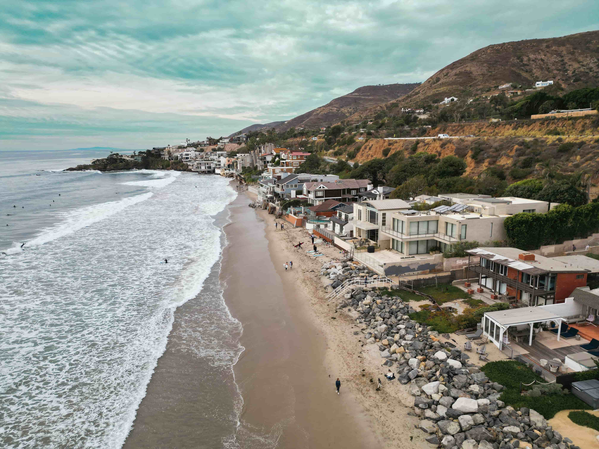

FAMOUS BEACHES
OF WEST
Discover the beauty of the western coast — where wide sandy
shores, lively beach culture,
scenic coastlines and unforgettable
ocean views come together.
VISITED
WONDERFULL
NICE BEACHES
OF WEST
DESTINATIONS
Copacabana Beach
Copacabana Beach is one of Brazil's most famous beaches. It is known for its wide sandy shoreline, Atlantic Ocean views, lively atmosphere and beautiful Rio de Janeiro surroundings.

06 — COPACABANA BEACH
WHERE CITY TOUCHES SEA.
Rio's legendary shoreline where golden sand, rolling waves and the rhythm of the city stretch along the Atlantic coast.

COPACABANA BEACH
Rio de Janeiro, Brazil

THE SHORELINE
Rio de Janeiro

RIO BY THE SEA
Copacabana, Brazil

THE ATLANTIC EDGE
Rio de Janeiro

RIO'S FAMOUS SHORE
Copacabana, Brazil

07 — MALIBU BEACH
PACIFIC MEETS CALIFORNIA.
A legendary California coastline where Pacific waves, golden shores and rugged cliffs create the spirit of Malibu.

MALIBU BEACH
California, USA

THE PIER
Malibu, California

PACIFIC SHORE
Malibu, California

ENDLESS BLUE
Pacific Coast

THE CALIFORNIA COAST
Malibu, USA
WHY TOURISTS
VISIT
More than just beautiful beaches — these destinations offer culture, adventure, scenery and unforgettable coastal experiences.
What makes Copacabana Beach special?
Copacabana Beach is one of Brazil's most famous beaches. Its wide sandy shoreline, Atlantic Ocean views and lively waterfront atmosphere make it a popular coastal destination.
- Wide sandy beach with beautiful ocean views.
- Famous curved waterfront and lively beach atmosphere.
- Beautiful views of Rio de Janeiro's mountains and coastline.
- Popular for walking, cycling, relaxing and photography.
- Well known for large celebrations and public events.
Walk. Explore.
Relax.
Walking, cycling, beach sports, photography, sightseeing and relaxing.
Tourists come to enjoy Rio de Janeiro's famous beach culture, scenery, waterfront atmosphere and nearby attractions.
Copacabana is one of Brazil's best-known beachfront destinations and an important part of Rio de Janeiro's coastal identity.
What makes Malibu Beach special?
Malibu is a famous coastal area in Southern California. Its Pacific Ocean coastline, sandy beaches, coastal hills and strong surfing culture make it a popular destination.
- Beautiful Pacific Ocean coastline and sandy beaches.
- Famous surfing culture and scenic coastal views.
- Dramatic hills and cliffs along parts of the coastline.
- Malibu Pier is a well-known landmark.
- Popular for photography, beach walks and sunsets.
Surf. Walk.
Relax.
Surfing, beach walks, photography, sightseeing, relaxing and enjoying coastal scenery.
Visitors enjoy Malibu's beautiful coastline, surf culture, scenic views and relaxed California beach atmosphere.
Malibu Pier is a well-known landmark along the coastline and adds to the area's scenic coastal character.
Beach Comparison
| FEATURE | Copacabana | Malibu |
|---|---|---|
| Country | Brazil | United States |
| City / Area | Rio de Janeiro | Malibu, California |
| Ocean | Atlantic Ocean | Pacific Ocean |
| Main Attraction | Lively waterfront & beach culture | Surfing & scenic coastline |
| Special Feature | Famous Rio beachfront setting | Malibu Pier & coastal hills |